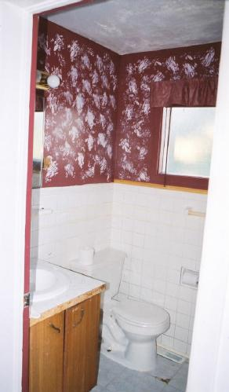
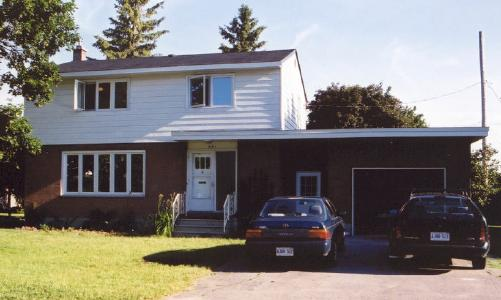
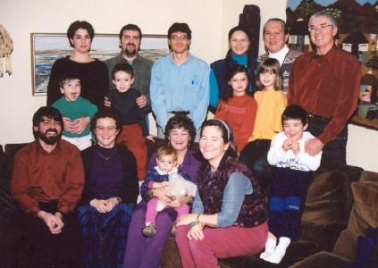
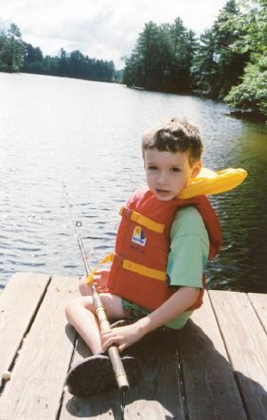
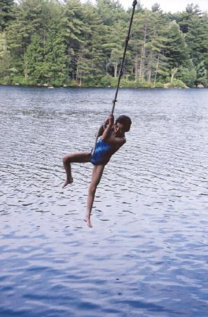

Dave, Ruth, Rachel and Ben Urban Shipley
951 Kincaid Court
Ottawa, Ontario, Canada K1V 6N6
(613) 260-2696
daveandruth@urbship.ca
November 2003
Dear friends and family,
Five years have passed since we last did an Urban Shipley family newsletter. We did send out brief notes when we moved to Canada in 2000, so most of you heard from us then. Since then we have moved again, so it's past time that we told our latest news. We'll stick mostly to events since 2000. There are more pictures and other stuff posted on the Urban Shipley family website (proudly serving you since 1996) than we can include here. You can go look there (http://www.urbship.ca/family/index.html) if you want more.
First, the headlines, then the details:
- We moved to Ottawa in 2000
- We rented a house for a couple of years and then bought one in 2002
- Ruth and Dave work at a firm called Marbek, doing energy management
- We still job share
- We still home school the kids
- Rachel is now 10 and Ben is now 7
- We see Dave's family often, and it is now only a one-day drive to Ruth's parents' place in New Hampshire, so we see them at least four times a year
- We finally took a vacation to the Rocky Mountains this year
The Move
The move was part of a plan established before we were even married. We were supposed to try Ruth's country for a while (it turned out to be nine years) and then try Dave's. We always get asked "how we like it here" and it's always a tough question to answer. How can you compare life in two countries? Certainly life in Ottawa is mostly pretty good. Our work life is significantly improved. It is wonderful to be closer to both families, and we have established some friendships and other good connections to the community. The homeschooling community here is very supportive, and Ottawa has a rich range of cultural activities and other things to do. And it's got to be the best place to ice skate in the world.
On the other hand, Ottawa experienced a decade of 6% annual population growth during the technology boom years. No city can withstand that kind of growth and not show the stretch marks. It has changed a lot since Dave lived here in the early 1980s. There is more traffic congestion, more pollution, and fewer services of all kinds to go around (health care, schools, houses - you name it). Growth has slowed recently, but not by much. Compared to Madison, it is a city under stress. There are things we got used to in Madison, and still miss. Above all, we still miss our friends there. Our hearts will probably never complete the move - a wistfulness will always remain.
When we contacted people to let them know where we were, we were still in that "honeymoon" period after a major move. Others who have changed countries before will know that the toughest time comes about halfway through the first year, when the excitement wears off. It's often worse when you're coming back to your own country, and that was definitely the case with Dave. Ben's lowest point came when he realized that he couldn't have his three favourite friends attend his fifth birthday party, because they all lived in Madison. Well, we all got through it, and things got better.
Housing
We rented a house when we first moved, because we didn't know the Ottawa housing market. When we did get serious about looking for a house to buy, it took us a long time. After looking for months (and driving our patient realtor crazy), it was finally Rachel's networking that got us a house. Ruth got talking with the mother of one of Rachel's Brownie colleagues, and learned that she wanted to sell her house. It was in a nice location - across the street from one we'd tried to buy before - and only 700 metres from the house we were renting. It needed a lot of work, but the price was good.
{kind=link}
 We took possession at the end of June 2002, but retained our rental house
until the end of August. We wanted to use the overlap to start some renovations.
Dave started ripping out carpets so that the hardwood floors could be
refinished. He also started work on installing new doors at the front
and back of the breezeway, so that it would be possible for work crews
to lock their tools in the garage.
We took possession at the end of June 2002, but retained our rental house
until the end of August. We wanted to use the overlap to start some renovations.
Dave started ripping out carpets so that the hardwood floors could be
refinished. He also started work on installing new doors at the front
and back of the breezeway, so that it would be possible for work crews
to lock their tools in the garage.
 The next major project was to renovate the main bathroom (left) on the second floor. We decided to have it gutted to the studs, and even had a wall moved to make it larger. There was extensive water damage around the bathroom, which had caused mildew damage inside the walls around the tub and in the kitchen below. The whole project got a bit involved.
The bathroom now looks like the photo at right. Of course, the job wasn't quite finished when we moved in. In fact, we had no sink in either the main bathroom or the kitchen. And then the basement toilet quit working. So the only toilet we had was on the second floor and the only sink was in the basement. We left to spend a week in New Hampshire.
It was a while before the house really became habitable, because once we got sinks, we turned around and had all the windows replaced and every room painted - all in the month of October. It was overwhelming. We needed to slow down and just live in the place for a while. Fortunately, winter came and we cocooned.
 This past summer, we had a few more things done, including some foundation repair, a new roof on the garage, and new fascia boards, soffits, eavestroughs and downspouts. Now the place looks a bit more presentable from the outside, as you can see from the picture at left. We're still thinking about what to do next.
Anyone else who owns a house knows that the improvements never end. To avoid your eyes glazing over, however, our discussion of them needs to end. If you want to know more, you can read it elsewhere on our website.
Work
Ruth and Dave still work at Marbek, the firm we joined when we first moved here. We both feel Marbek is a great place to work. We are doing interesting work that is intended to, and often does, make the world a better place. Marbek is a well-regarded firm that seems to have quite a bit of influence. It is good to see, at least sometimes, that the recommendations we come up with in our projects actually get adopted and acted on by the governments, utilities, and other organizations that hire us.
Of course, no job is perfect. Anyone in consulting has experienced the peaks and valleys of that world. In Ottawa, inevitably, the last few months of the federal fiscal year (leading up to 31 March) are the crunch time. All these clients pop out of the woodwork and realize they have a limited time and not enough resources to finish all the projects they promised to do during the fiscal year. It's our job to take up the slack, put in the long hours, and help them get there. The good side of that is that we're allowed to take some of that overtime as vacation in the (usually less busy) summer. The tough part is that we have to survive it while it's happening.
We are still job-sharing, and it still works after nearly 10 years. Dave works about 25 hours a week and Ruth works about 20. It's remarkable that we have managed to bring this job-sharing pattern to a new employer. After six years doing it at the Energy Center of Wisconsin, we figured we had most of the bugs worked out, but we're still grateful that Marbek was willing to risk trying it. We think our family life is very much the better for it.
School
We still homeschool our kids. Rachel is in grade five now (or fifth grade, as they say in the U.S.) Ben is in grade two. We handle the basics ourselves, including reading, writing, math, spelling, and topics in science, history, geography and such. The kids both take piano lessons, and Rachel is in a choir. They are both part of an organized swimming lesson session for homeschoolers, and they are also currently taking group gymnastics classes. Rachel just finished a creative writing class.
French is probably our greatest challenge. The kids spend Monday mornings with an Algerian woman who was formerly a French teacher. We also work on it with tapes and computer software. At some point, we may have to investigate options for French immersion as a family.
We still have no idea how long we will homeschool. It continues to work well for us as a family. Both kids are learning well, and most of the time everybody gets along reasonably well as we work away at it.
Family
We don't spend as much time on airplanes any more, because Dave's family is mostly in the Ottawa area and Ruth's parents are a one day drive from here. Dave's parents still live in the same Ottawa house they've had since 1980. His sister Elaine also lives in Ottawa with her partner Vinnie and a new baby. His name is Theland (rhymes with New Zealand) and he was born May 27, 2003. Dave's sister Jill lives across the river in Gatineau with her husband Marc. Dave's brother Kevin lives in Kingston, two hours' drive south, with his wife Carol and four children. In December of 2001, there was a big photo op at the Shipley house, and we managed to get a reasonably decent shot of the whole family. The only one missing is Theland, who at the time was merely a very good idea.
We travel to New Hampshire twice a year and Ruth's parents come here in between. The Urbans have been remodelling a cottage on a lovely lake in southern New Hampshire. The location is great, especially when the weather is hot enough to make swimming appealing. It's a great place for fooling around in boats, trying out fishing, doing puzzles, or swinging on the rope swing. We are less than half as far from them as we were in Wisconsin, even though we moved across an international border.
Travels
Since we moved to Canada, we have been on airplanes a few times. The first major trip was in 2001. We went back to Wisconsin to visit all the friends we had been missing (and still miss!) We were having a wonderful time and beginning to feel sad about having to end our vacation and come home, when suddenly we couldn't come home. Our scheduled return on the 13th of September became impossible in just a few minutes one horrible morning. It was a grim and very strange time to be in the U.S. We were lucky in many ways - we were all together, we were safe, and we were surrounded by people we loved. Eventually, we made our way home by train and by bus.
We didn't have a major vacation in 2002, because we were too busy buying the house, supervising contractors, moving, fixing things, supervising more contractors, and generally dealing with logistics.
In September of 2003, we went to the Rocky Mountains, a vacation we'd been wanting to do for years. We had a wonderful time, hiking, swimming in hot springs, looking at waterfalls, and seeing the wonderful wildlife. Unfortunately, there were some days when we could hardly see the mountains because of the smoke from wildfires in British Columbia. I will stick in some pictures, but in the meantime, there are lots here.
Dave's CornerOddly enough, I haven't curled since I moved back to Canada, the great curling country. There are lots of curling clubs here, but for some reason I haven't joined one. Instead, I have been exploring a different passion - singing. I joined two choirs soon after moving to Ottawa - the Ottawa Homeschooling Choir and the Ottawa Community Gospel Choir. The Gospel Choir also included my mom and my cousin Erinne. The Homeschooling Choir included Rachel and, eventually, my dad. Quite the family singing thing. The Homeschooling Choir led me to take private voice lessons, because the then director, Sylvia Larrass, is a wonderful singing teacher. For various reasons, I'm not in either of the choirs any more, but I'm still taking lessons, exploring what I can do as a soloist and aiming to try the Grade 9 Conservatory exam in June. I'm really enjoying it - I'm still at the stage where there is so much room for improvement that I can notice the progress over time. There's no danger that I will be giving up my day job any time soon. The house has been a major preoccupation over the last year. While we have contracted out quite a few things, it seems there is a nearly endless list of repairs and projects for me. The latest is a playhouse for the kids. It's now a 6 foot by 6 foot platform about 5 1/2 feet in the air, with a trapdoor in the middle. Next year I'll put up walls and other useful features. Ruth and I have had a bread machine for a few years, and have baked a lot of our own bread. We were missing a couple of kinds of bread that we used to buy in Madison, but which the bread machine couldn't produce. One is a crusty sourdough and the other is cinnamon swirl. I set out to replicate them, making them partly with the machine and partly by hand. Both are now pretty reliable recipes, and we really enjoy the results. I'm still reading ridiculously large classic works of literature. The Complete Works of Shakespeare was just the start. The latest is In Search of Lost Time (often called Remembrance of Things Past) by Marcel Proust. I am now in the sixth and final volume, and it has been very interesting. Although the sentences and paragraphs (and the whole thing) tend to be long, it is otherwise an enjoyable read. Lots to think about, and, surprisingly, passages that make me laugh out loud when I'm riding the bus home from work.
|
Ruth's CornerRuth will have much to say about all the wonderful things she's doing, volunteering with Ben's Beaver group (which is where she is at this very moment) and lots of other things. |
Rachel's CornerHi! As you might have guessed, this is Rachel. As for what I've been up to, I've been taking a creative writing class (it just finished), doing gymnastics, and taking homeschooling swimming lessons. The writing class was really fun. It was with a tutor that my friend Maddie's mom recomended. My friends Maddie and Emma were in it, too. Leslie (the tutor) has a lot of ideas to get kids writing. Maybe I'll put up one of the stories I wrote. Swimming lessons are fun, too. I am now in Aquaquest 9. That means I can get my guide swimming badge (oh, I neglected to mention that I'm in my second year of guides). Too bad there isn't a badge for people who know really long words, because I know the longest word in the english language. (pnemonoultramicroscopicsilicovolcanoconeosis) I hope I spelled that right. (Scott, when you get this send me the right spelling.) Well, back to the subject. I have been taking gym lessons at Starr Gymnastics, and making a lot of progress. I still take piano lessons, and am in level 4. Now for the really big news. I am in the Ottawa Childrens Choir. I had a concert for Remembrance Day (Veterans day to Americans). We were outside in the freezing rain for about an hour. I froze even though I was wearing around 15 layers. I had a cold that was getting better, and now it's worse! And, we have another outdoor concert in December! Lately I have been reading a lot of Tamora Peirce books. I wonder if any of you have read them. They include the books about Alanna the lioness. I only have one more book before I've read them all. She better get writing! I enjoy adventure stories. I also read the first page of the first book of Proust. It looked interesting. Maybe I will try it when I get a bit older. So far I haven't read Don Quixote, but have read A Midsummer Night's Dream, and am hoping I get some of Shakespeare's comedies for Christmas. |
Ben's CornerBen enjoys seeing his cousins more often since he moved to Canada. He has a strong passion for Lego, especially the Bionicles and the Galidor series. The Bionicles are action figures that you build. Galidor figures are creatures - mostly monsters and robots - that can change body parts. For example, their arm might change into a machine of some kind. Ben's dad thinks this would be handy when doing home repairs. He'd like his arm to be able to change into a cordless drill when he's at the top of a ladder and suddenly needs one. (Oops, this was supposed to be Ben's corner.) Ben also attends a Beaver Group. Beavers are part of Scouting. He's in his third year, so next year he can move on to Cubs. This Beaver group is particularly rowdy, but it's still fun. They recently spent the night at the Science and Technology Museum, with 250 other Beavers and their parents and leaders. There was an electricity show and a cryogenics show. They were both really good. In the electric show, there was a "chain of pain" (with a Van der Graaf generator at one end and static electricity shocks from one person to the next). In the cryogenics show, the Beavers lay down on their stomachs, and the demonstrator poured boiling water into liquid nitrogen. The nitrogen boiled and flowed out in a huge cloud, covering all the Beavers. We will ask Ben what else he wants to talk about. He'll probably mention the fact that he learned to ride a bike this summer, etc. |
love to all,
Dave, Ruth , Rachel and Ben